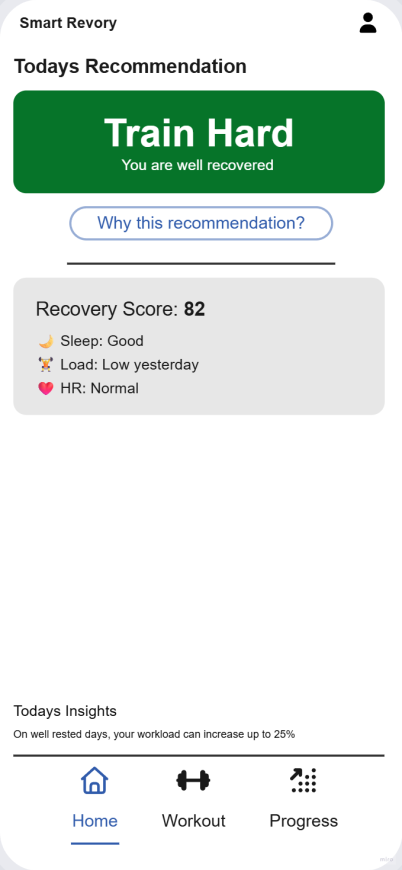

01 · Problem
The Core Challenge
Ambitious fitness enthusiasts have access to massive amounts of recovery data — sleep quality, heart rate variability, training load — but they don't know how to translate these metrics into daily training decisions. This leads to overtraining, burnout, and stalled progress.
"We don't want more data. We want to know what to do."
Too Much Data
Apps deliver metrics, but no actionable guidance on what they mean.
Feeling-Based Decisions
Without a clear system, athletes default to intuition rather than data.
No Feedback Loop
No mechanism to evaluate whether decisions led to better outcomes.
Product Definition & MVP
A decision-support system that helps fitness enthusiasts determine how to train each day based on their recovery and readiness. Value: instead of just tracking data, provide clear daily training recommendations.
MVP Features
- Daily Training Recommendation — Train Hard / Train Light / Rest
- Recovery Score — Aggregates sleep, HRV, and load
- Basic Input System — Sleep, training, and subjective feeling
- Simple Feedback Loop — Shows how decisions affect recovery
Extensions (Future)
- Personalized Recommendation Engine — Learns and adapts over time
- Training Load History — Long-term trends and overtraining alerts
- Smart Alerts — Proactive nudges like "You should rest today"
- Wearable Integration — Auto-sync from smartwatches
02 · Research & Insights
What We Discovered
Target Audience
Ambitious Fitness Enthusiasts
- • Work out 3–6 times a week
- • Goal: Performance & strength building
- • Have wearables/fitness trackers
- • Seek performance optimization
Current Behavior
- • Make decisions emotionally
- • Overlook recovery signals
- • Struggle with data interpretation
- • Risk overtraining injuries
Pain Points
- • Information overload
- • No clear guidance
- • Missing feedback loops
- • Stalled progress
Analyzed 8+ market solutions
We examined WHOOP, Garmin, Oura, Apple Health, and others. The pattern was clear: everyone optimizes for data collection and display. None translate metrics into a single, clear daily recommendation.
WHOOP
Strength: Strong recovery insights
Weakness: Complex data interpretation
Garmin
Strength: Detailed tracking
Weakness: Information-heavy UX
Apple Health
Strength: Large ecosystem
Weakness: Limited actionable guidance
HRV & recovery science
We reviewed peer-reviewed studies on heart rate variability, training load, and recovery. Key insight: recovery plays a critical role in long-term performance, consistency, and injury prevention, yet it is often undervalued by users. This became the scientific foundation for our recommendation algorithm.
Key Findings
03 · Product Strategy
Strategy & Positioning
Value Proposition
We don't track data — we tell you what to do.
Instead of just tracking data, the product provides clear daily training recommendations, helping users train smarter, avoid overtraining, and improve long-term performance.
Design Principles
● Action Over Data
Show what to do, not what is. Every metric leads to a clear decision.
● Clarity Over Complexity
One recommendation per day. Simple, direct, no ambiguity.
● Guidance Over Tracking
The product coaches—it doesn't just log. Proactive, not passive.
● Personalization First
Recommendations adapt over time based on individual response patterns.
04 · UX Flow & System Logic
How the System Works
System Overview (Big Picture)
Structure: Input → Processing → Output → Feedback Loop
INPUT
Sleep data, HRV, Training load, Subjective feeling
PROCESSING
Recovery calculation, Load analysis, Baseline adjustment
OUTPUT
Recovery score, Daily training recommendation
FEEDBACK
Behavior evaluation, System adaptation
Core User Flow (Daily Use Case)
- 1. User opens the app
- 2. Views current recovery status
- 3. Receives a clear training recommendation
- 4. Makes a decision (train / rest / light)
- 5. Completes training and logs activity
- 6. System updates recovery and load data
- 7. Receives feedback the next day
Decision Logic
How the system determines daily recommendations:
05 · UI Design & UX Concept
Interface Design & Screens
Core UX Concept
The product reduces complex recovery data into one clear daily training decision.
Information Hierarchy
PRIORITY
Daily Recommendation (primary element) → Train / Light / Rest
PRIORITY
Recovery Score → supportive, not dominant
SECONDARY
Why this recommendation? (Explainability) - "Low sleep", "High training load"
SECONDARY
Quick Actions - Log training, record how you feel
Wireframes & UI Comparison
Wireframe

UI Design

Thoughts behind the design
The wireframe focused on validating the overall information hierarchy and ensuring that the daily recommendation remained the primary focal point. In the final UI, the experience was refined with stronger contrast, clearer visual grouping, and a more immersive dark interface to create a calmer and more premium feel. Supporting insights were intentionally positioned as secondary content to keep the decision-making process simple, focused, and easy to understand.
Wireframe

UI Design

Thoughts behind the design
The wireframe explored how recovery insights and explanations could be structured in a simple and understandable way. In the final UI, the layout was refined into a more modular and immersive experience with clearer grouping, supportive labels, and improved visual spacing. Interactive information icons were introduced to increase transparency and help users better understand how recovery factors influence the daily recommendation.
Wireframe

UI Design

Thoughts behind the design
The wireframe focused on validating the workout logging flow and testing how quickly users could input training data. In the final UI, the experience was redesigned to feel more lightweight, interactive, and motivating through clearer controls, improved spacing, and stronger visual feedback. The simplified layout helps users complete workout logging with minimal friction while keeping the focus on consistency and daily habit building.
Wireframe

UI Design

Thoughts behind the design
The wireframe explored how long-term recovery and training trends could be visualized in a simple and understandable way. In the final UI, the analytics experience was refined with clearer chart structures, stronger visual hierarchy, and more focused insights that highlight behavioral patterns instead of overwhelming users with raw data. The result is a cleaner and more motivational progress experience that encourages consistency and smarter recovery habits.
06 · Metrics & Impact
Results & Future Direction
Behavioral Success Metrics
↑ 35%
Increased training consistency
Users follow recommendations and maintain steady training schedules
↓ 48%
Reduction in overtraining
Users recover better and avoid burnout with data-driven decisions
↑ Recovery
Improved recovery patterns
Better sleep, lower HR, more sustainable training
↑ Retention
Higher user retention
Users see results and stay engaged long-term
Monetization Strategy
Free Tier
- • Basic recovery score
- • Daily recommendation
- • Manual input system
Premium Features
- • Personalized insights
- • Advanced analytics
- • Wearable integrations
- • Long-term trend analysis
Next Steps & Extensions
Personalization Engine
Learns from user behavior and adapts recommendations over time
Wearable Integrations
Auto-sync from Apple Watch, Garmin, WHOOP, Oura
Smart Alerts & Nudging
Proactive notifications like "You are above your limit" or "You should rest today"
Coaching Layer
Personalized coaching recommendations or premium guidance
Key Learnings
Reflection
This project challenged me to think beyond interfaces and design a system that connects data, behavior, and decision-making. The result is a product that doesn't just inform—but actively guides users toward better outcomes. By prioritizing clarity and simplicity, we created a tool that transforms how fitness enthusiasts approach training and recovery.